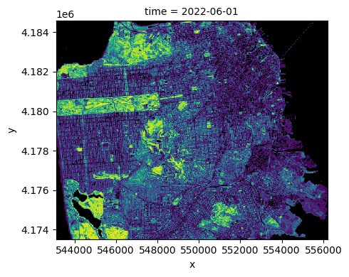

from pystac_client import Client
import odc.stac
import pystac_client
import numpy as np
import warnings
warnings.filterwarnings('ignore')# Examining Environmental Justice through Open Source, Cloud-Native Tools: R
This Jupyter (ipynb) notebook provides a brief introduction to a cloud-native workflow. A more complete version of this example can be found in the intro.qmd Quarto notebook. Here, we merely include an ipynb version to demonstrate how Jupyter notebooks may be included in quarto.
Note: in Codespaces editor, choose “Select Kernel” -> “Jupyter Kernels” to get started.
Developer note: At this time, Gitpod VSCode editor will not detect the default python environment (VIRTUAL_ENV variable, pointing to /opt/venv/bin/python), or any other kernelspec added with ipykernel.
box = [-122.51006, 37.70801, -122.36268, 37.80668]
client = Client.open("https://earth-search.aws.element84.com/v1")
search = client.search(
collections = ['sentinel-2-l2a'],
bbox = box,
datetime = "2022-06-01/2022-08-01",
query={"eo:cloud_cover": {"lt": 20}}
)items = search.get_all_items()
# items[0] # peak at an itemdata = odc.stac.load(
items,
crs="EPSG:32610",
bands=["nir08", "red"],
resolution=30,
bbox=box
)red = data.red
nir = data.nir08
# summarize over time.
# quite probably better to use resampling strategy in odc.stac.load though.
import dask.diagnostics
with dask.diagnostics.ProgressBar():
ndvi = ( ((nir - red) / (red + nir)).
resample(time="MS").
median("time", keep_attrs=True).
compute()
)
# mask out bad pixels
ndvi = ndvi.where(ndvi <= 1)import matplotlib as plt
cmap = plt.colormaps.get_cmap('viridis') # viridis is the default colormap for imshow
cmap.set_bad(color='black')
ndvi.plot.imshow(row="time", cmap=cmap, add_colorbar=False, size=4)<xarray.plot.facetgrid.FacetGrid at 0x7fec26fd96c0>